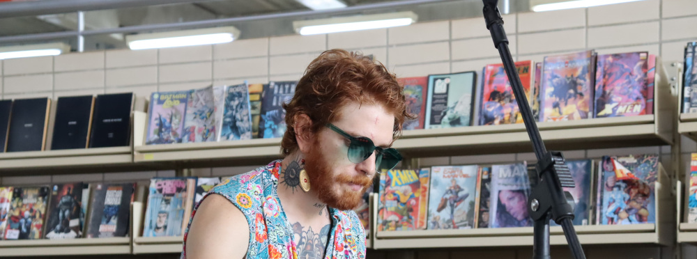

Biografia
Músico multi-instrumentista com sólida formação acadêmica e técnica, Leonardo Merighi dedica-se à música como uma ferramenta de criação, fomento cultural e produção de eventos. Especializado em piano popular (MPB/Jazz) No Conservatório de Tatuí e licenciado em Música pela UFSCar, sua atuação transita entre a performance, educação musical, produção e gestão cultural, escrita autoral, pesquisa sobre adaptação das levadas de ritmos brasileiros ao piano e estruturação de arranjos instrumentais para diversas formações. Ex-fundador, compositor, arranjador e co-gestor do Quarteto Erva Cidreira, também possui outras divulgações e trabalhos pessoais focados na viabilização de projetos fonográficos, circulação artística, e produção musical e artística autoral.
Trajetoria Musical
A veia composicional de Leonardo manifestou-se precocemente, aos 14 anos, quando deu início a sua primeira banda de caráter totalmente autoral, iniciando um processo de amadurecimento composicional e criativo que o acompanha há mais de uma década. Essa dedicação à escrita musical e ao estudo teórico da história e práticas musicais culminou na sua participação ativa em grupos como a “Napala” e o “Quarteto Erva - Cidreira”, onde contribuiu não apenas como instrumentista, mas como peça-chave na identidade sonora dos grupos. Sua capacidade de escrita abrange desde canções populares até obras instrumentais, sempre pautadas pelo estudo profundo da rítmica brasileira e das harmonias do Jazz e demais gêneros urbanos.

Apresentações
Big Boom Orchestra (B.B.O. - UFSCar)
- Atuou como arranjador da Big Band, com destaque para a performance no Festival Chorando sem Parar em São Carlos — um dos maiores eventos de Choro do mundo. Foi o responsável pelo arranjo da obra "Papo de Anjo" (clássico de Radamés Gnattali), demonstrando domínio técnico na escrita para metais e na transposição de linguagens tradicionais para grandes grupos instrumentais.
Quarteto Erva Cidreira
- Participou ativamente da concepção musical, escrita e composição para o quarteto, sendo responsável por conferir a sofisticação harmônica e o refinamento dos arranjos que caracterizam o grupo.